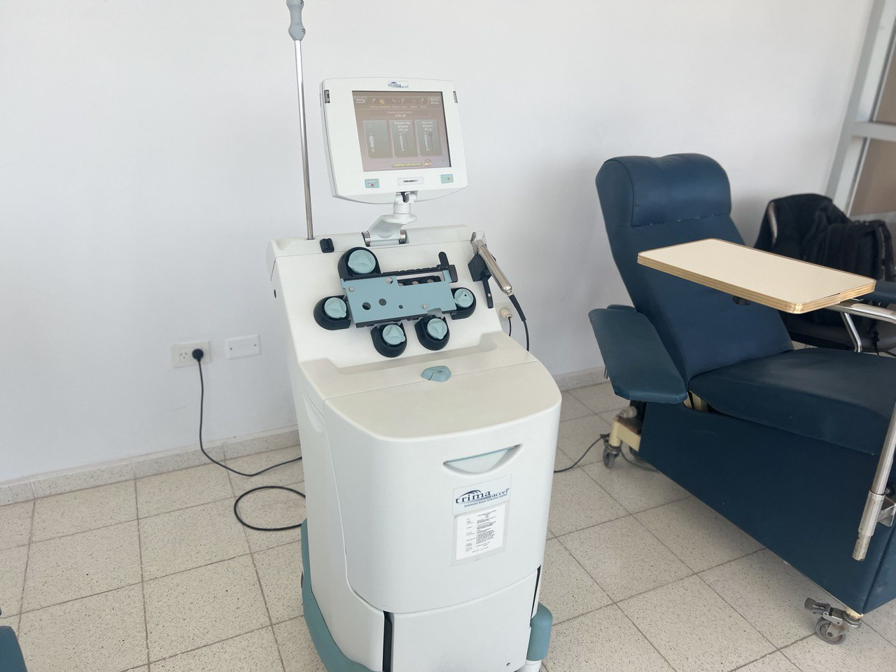

Donar Plaquetas
Aféresis es un procedimiento médico que consiste en elegir, separar y recolectar un componente de la sangre (glóbulos rojos, glóbulos blancos, plaquetas o plasma), mientras se devuelve al donante el resto de los componentes sanguíneos, esto es posible gracias aun separador celular llamado MAQUINA DE AFERESIS.
PLAQUETAS: Son pequeñas células que circulan en la sangre; participan en el proceso de coagulación y reparación de los vasos sanguíneos dañados.
LAS PLAQUETAS SE UTILIZAN EN:
- Leucemias
- Trasplantes
- Cirugías
- Inmunodeficiencias
- Traumas Severos
BENEFICIOS:
- Una donación de plaquetas por aféresis puede equivaler entre 6 o 18 donaciones comunes.
- Permite transfundir una mayor cantidad de plaquetas provenientes de un solo donante, brindando una mayor seguridad transfusional.
- Las plaquetas donadas se recuperan entre las 24 y 72 horas.
- Se puede donar 2 veces al mes, hasta 24 veces al año.
REQUISITOS PARA LA DONACION:
- Sentirse Saludable
- Tener entre 18 y 65 años
- No estar bajo tratamiento médico ni haber tomado aspirinas, ibuprofeno o calmentes en los ultimos 3 días